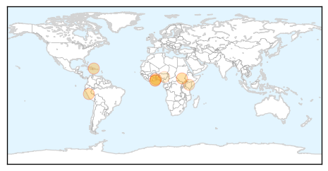

30 Day Trends
Web: 0 alerts, 0 warnings
Twitter: 0 alerts, 0 warnings
Top Articles:
- 0.998
- Marginal Drop In Cholera Cases – Daily Guide Ghana
- 0.997
- Achimota Hospital records seven cholera cases
- 0.995
- 29 killed by cholera in South Sudan
- 0.992
- Cholera: PAHO urges Member States to remain vigilant. CPS advises travellers to Haiti and Dominican Republic to take preventative measures
- 0.990
- UN Senior Coordinator says cholera eradication in Haiti will take years
- 0.718
- South Sudan: South Sudan Situation: UNHCR Regional Update 68 (29 -03 July 2015)
- 0.545
- Local Government ministry fights cholera outbreak
- 0.522
- Cholera kills seven, nine hospitalised in Plateau
Top Tweets:
-
No tweets found for Jul 03, 2015
Web/News Articles

Tweets
Article Locations
Article Confidences